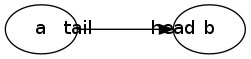

|
|
1 英吋（inch） = 72 points |
-
labelangle = <angle> -
設定 head/tail label 跟 node 之間形成的這條線，跟 edge 的角度為 angle 度（順時鐘是負值，逆時鐘是正值）。
digraph { ranksep = 1 nodesep = 1 a -> b [ taillabel = "tail" headlabel = "head" labelangle = 45 # 逆時鐘 45 度 labeldistance = 3.6 ] a -> c }digraph { ranksep = 1 nodesep = 1 a -> b [ taillabel = "tail" headlabel = "head" labelangle = -45 # 順時鐘 45 度 labeldistance = 3.6 ] a -> c } -
labeldistance = <scale> -
設定 head/tail label 相對於 node 的距離有 scale 個單位（每個單位的長度是 10 point）。
這裡刻意安排
labelangle = 0讓 head/tail label 可以沿著 edge 走，而且 node 間的距離用ranksep = 1設定成 1 inch (72 points)，方便量測labeldistance的效果。digraph { rankdir = LR ranksep = 1 a -> b [ taillabel = "tail" headlabel = "head" labeldistance = 0 # 貼著 node labelangle = 0 ] }
將
labeldistance調整成 7.2 (7.2 x 10 point = 72 points = 1 inch)，剛好是 edge 的長度，結果就是 head label 跟 tail label 的位置剛好對調了。digraph { rankdir = LR ranksep = 1 a -> b [ taillabel = "tail" headlabel = "head" labeldistance = 7.2 # 剛好是 edge 的長度 labelangle = 0 ] }
-
labelloc = <loc> -
設定 label 的相對位置。
對 root graph 或 cluster 而言，loc 可以是
t(top) 或b(bottom)。其中，root graph 的 label 預設擺在上方，而 cluster 則是預設擺在下方。digraph { label = "Root Graph" a -> b subgraph cluster_lang { label = "Sub Graph (Cluster)" b } }把 root graph 跟 cluster 預設擺放 label 的位置調換過來。
# digraph { label = "Root Graph" labelloc = t a -> b subgraph cluster_lang { label = "Sub Graph (Cluster)" labelloc = b b } }對 node 而言，loc 可以是
t(top)、b(bottom) 或c(center)。由於 label 永遠在 node 的框框裡，這裡的
t、b、c分別表示 label 在 node 的框框裡要靠上、靠下、還是垂直置中，當然前題是 node 的高度要大於 label。digraph { node [ shape = box, height = 1] TOP [ labelloc = t ] BOTTOM [ labelloc = b ] CENTER [ labelloc = c ] } -
nodesep = <sep> -
設定同一 rank 中，兩個 node 間的最小距離為 sep 英吋。
下面 b 跟 c 屬於同一個 rank，可以用
nodesep來控制它們之間的距離。digraph { nodesep = 0.2 a -> b a -> c }將 node 間的距離放上 5 倍，但 a 跟 b/c 間的距離不受影響。
digraph { nodesep = 1 a -> b a -> c } -
ranksep = <sep> -
設定兩個 rank 間的最小距離為 sep 英吋。
下面 a 跟 b/c 屬於不同 rank，可以用
ranksep來控制兩個 rank 間的距離。digraph { ranksep = 0.2 a -> b a -> c }將 rank 間的距離放大 5 倍，但 b 跟 c 之間的距離不受影響。
digraph { ranksep = 1 a -> b a -> c }